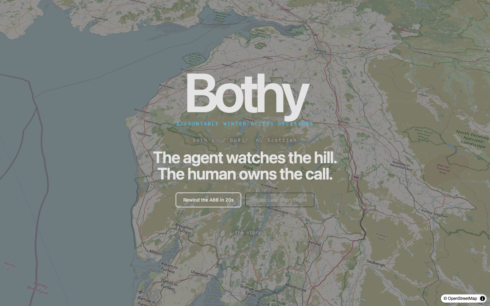

▍ AWS · AGENTS-FOR-HUMANS · 2026
Agents, but accountable.
▍ bothy.trustfall.xyz

The hill is loud. The duty desk is alone.
The agent watches
the hill. The human
owns the call.
the hill. The human
owns the call.
▍ Bothy does three things
→ Watch the corridor
→ Draft the decision
→ Wait for the human ✓
▍ VO 1/7 · THE PROBLEM
Noise tools broadcast. Autonomous tools over-promise. Bothy sits in the accountable middle.


▍ 12 Feb 2026 · dawn · all quiet
LOW · 0.18
▍ VO 2/7 · REST → WAKE
At dawn the room rests. Press play — and watch it wake. Five beats, five timestamps, one outcome 14h 40m later.

01strands:qwen-hf · invoke retrieve_weather()
02fetch_national_highwaysfetch_ea_gaugesread_past_incidents
03causal chain · 6 cited signals · confidence 0.90
04provenanceGuard ✓ — blocks create_human_review without timestamped cited sources
05create_human_review() · A66 HIGH · needs officer sign-off
✓
Demo Officer · Hackathon Take— Duty Officer
Confirmed via Bothy Approve · A66 closure risk verified · nothing publishes alone
2026-02-12 · 21:30 UTC · audit · signed
▍ VO 3/7 · THE ACCOUNTABLE GATE
The agent drafts. A named officer signs. Nothing publishes alone.
▍ SHAREABLE CASE · /case/a-backtest-r-A66…
flagged14h 40mbefore it happened
● APPROVED
A66 · HIGH 0.97
Raised
2026-02-12 · 09:00
Outcome
2026-02-12 · 23:40 · A66 closed
Cited
6 sources · 5 timestamps
Signed
Demo Officer · Hackathon Take
Action
needs a hand — forward to parish desk
▍ 2 on watch
▍ VO 4/7 · WATCH MY ROAD
One email. Pinged only when a real decision lands. Forwardable as a signed case.

SAME PIPELINE · NEW WEDGE
▍ SNOW vs RAIN — same ledger
Snow → A66
Drifting Stainmore · speeds −70%
→
Rain → Eden
River 2.0m · flood warning
One agent. Any weak-signals problem.
▍ VO 5/7 · GENERALIZE
River gauges instead of snow. Same gate. No new contract.
▍ WHY IT MATTERS
Hours of monitoring become
one signed decision — with receipts.
one signed decision — with receipts.
A missed closure strands families on the A66.
A missed river rise floods the valley.
A missed river rise floods the valley.

▍ bothy.trustfall.xyz
Agents, but accountable.
▍ AWS · AGENTS-FOR-HUMANS · 2026
Bothy.
Agents, but accountable.
Agents, but accountable.
bothy.trustfall.xyz · github.com/thisyearnofear/bothy